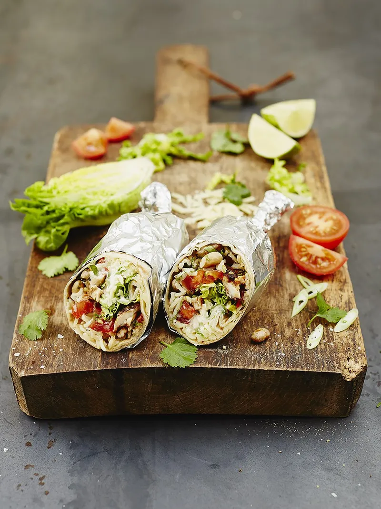

Cracking Chicken Buritto

Cracking Chicken Buritto
With fresh, zingy salsa
“This chicken burrito recipe is a Tex-Mex classic and a really tasty way of using up leftover rice, too ”
Ingredients
- 4 skinless, boneless free-range chicken thighs
- 1 tablespoon sweet smoked paprika
- ½ a tablespoon ground cumin
- olive oil
- 2 cloves of garlic
- 1 bunch of fresh coriander
- 1 x 400 g tin of pinto or black beans
- 200 g leftover white or brown rice , chilled
- 1 lime
- 4 ripe tomatoes
- 4 spring onions
- 1 little gem lettuce
- 4 large flour tortillas
- 80 g mature Cheddar cheese
- 4 tablespoons Greek yoghurt
Steps
- Preheat a griddle pan over a high heat. Meanwhile, place the chicken thighs between two sheets of greaseproof
paper, then bash with the base of a heavy pan to roughly ½cm thick. Pop into a bowl, sprinkle over
the paprika, cumin and a lug of oil, and season well with sea salt and freshly ground black pepper.
- Mix well to coat, then place the chicken onto the hot griddle.
Cook for 10 minutes, or until
charred and cooked through,
turning halfway. Leave to cool slightly.
- Meanwhile, peel and finely slice the garlic. Pick the coriander leaves and set aside,
then finely slice the stalks. Heat 1 tablespoon of oil in a large frying pan over a medium-high heat,
add the garlic and coriander stalks and fry for 1 minute.
- Drain, rinse and add the beans, then fry for a further few minutes. Add the rice and cook for 5 minutes,
or until crisp and piping hot through, stirring occasionally.
Finely grate in the lime zest, roughly chop and add half the coriander leaves. Stir well and remove from the heat.
- Roughly chop the tomatoes and trim and finely slice the spring onions,
then add to a bowl with the juice of the lime. Roughly chop and add the remaining coriander leaves, mix well and season to taste.
Shred the lettuce and cooled chicken.
- Pop a tortilla onto the griddle for 1 minute to soften, then place onto a board.
Spoon one-quarter of the fried rice and beans along the middle,
top with a generous spoonful of salsa, a handful of lettuce and one of the shredded chicken thighs.
Grate over some cheese and add a spoon of yoghurt.
- Wrap up the burrito, then tuck in. Repeat with the remaining ingredients, serving as you go.